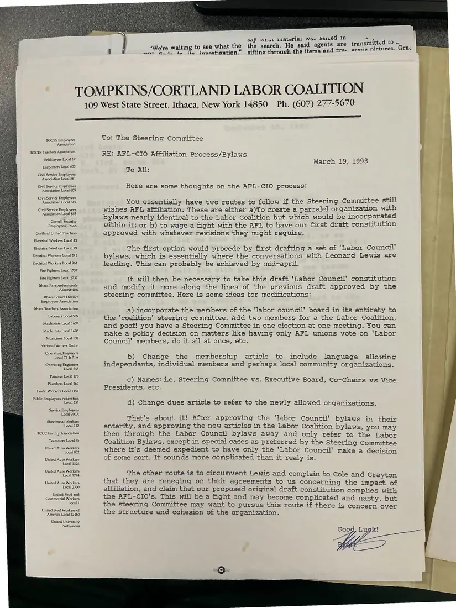

Memorandum, 1 page
Memo to the Steering Committee: AFL-CIO affiliation process and bylaws
March 19, 1993
A memo laying out two routes to AFL-CIO affiliation: create a parallel “labor council” with bylaws nearly identical to the Coalition's own, or contest the AFL-CIO's handling of the first draft constitution. It recommends changes to membership, naming, and dues articles.
Download or cite this itemPages


(open zoom view)Read the page text (machine-read, mostly readable)
This text was generated automatically from the photograph and has not been corrected. The image is the authoritative record.
baY wiwt 1iGlerial Wee sei.ed 1n “ ‘ rg “We're waiting to see what the the search. He said agents are transmitted to Yorrn ‘ ifti ie nictures. wnt fui, im ite investigation.” sifting through the items and trv- erotic nictre: TOMPKINS/CORTLAND LABOR COALITION 109 West State Street, Ithaca, New York 14850 Ph. (607) 277-5670 EEE BOCES Employees Association BOCES Teachers Association Bricklayers Local 17 Carpenters Local 603 Civil Service Employees Association Local 561 Civil Service Employees Association Local 605 Civil Service Employees Association Local 849 Civil Service Employees Association Local 855 Cornell Securi ty Employees Union Cortland United Teachers Electrical Workers Local 43 Electrical Workers Local 79 Electrical Workers Local 241 Electrical Workers Local 961 Fire Fighters Local 1737 Fire Fighters Local 2737 Ithaca Paraprofessionals Association Ithaca Schoo! District Employees Association Ithaca Teachers Association Laborers Local 589 Machinists Local 1607 Machinists Local 1608 Musicians Local 132 National Writers Union Operating Engineers Local 71 &71A Operating Engineers Local 545 Painters Loca} 178 Plumbers Local 267 Postal Workers Local 1151 Public Employees Federation Local 251 Service Employees Local 200A Sheetmetal Workers Local 112 TCCC Faculty Association Teamsters Local 65 United Auto Workers Local 802 United Auto Workers Local 1326 United Auto Workers Local 1774 United Auto Workers Local 2300 United Food and Commercial Workers Local 1 United Steel Workers of America Loca] 12460 United University Professions To: The Steering Committee RE: AFL-CIO Affiliation Process/Bylaws March 19, 1993 To All: Here are some thoughts on the AFL-CIO process: You essentially have two routes to follow if the Steering Committee still wishes AFL affiliation. These are either a)To create a parralel organization with bylaws nearly identical to the Labor Coalition but which would be incorporated within it; or b) to wage a fight with the AFL to have our first draft constitution approved with whatever revisions they might require. The first option would procede by first drafting a set of "Labor Council’ bylaws, which is essentially where the conversations with Leonard Lewis are leading. This can probably be achieved by mid-april. It will then be necessary to take this draft 'Labor Council’ constitution and modify it more along the lines of the previous draft approved by the steering committee. Here is some ideas for modifications: a) incorporate the members of the ‘labor council’ board in its entirety to the ‘coalition’ steering committee. Add two members for a the Labor Coalition, and poof! you have a Steering Committee in one election at one meeting. You can make a policy decision on matters like having only AFL unions vote on ‘Labor Council’ members, do it all at once, etc. b) Change the membership article to include language allowing independants, individual members and perhaps local community organizations. c) Names: i.e. Steering Committee vs. Executive Board, Co-Chairs vs Vice Presidents, etc. d) Change dues article to refer to the newly allowed organizations. That's about it! After approving the ‘labor Council’ bylaws in their enterity, and approving the new articles in the Labor Coalition bylaws, you may then through the Labor Council bylaws away and only refer to the Labor Coalition Bylaws, except in special cases as preferred by the Steering Committee where it's deemed expedient to have only the 'Labor Council' make a decision of some sort. It sounds more complicated than it realy is. : The other route is to circumvent Lewis and complain to Cole and Crayton that they are reneging on their agreements to us concerning the impact of affiliation, and claim that our proposed original draft constitution complies with the AFL-CIO's. This will be a fight and may become complicated and nasty, but the steering Committee may want to pursue this route if there is concern over the structure and cohesion of the organization.
See something wrong, or recognize a person or event? Send a correction. If you hold rights in this item or think it should not be public, write to the same address.